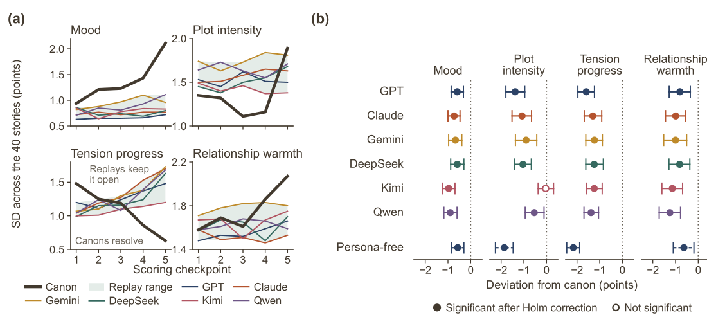

The replays converge
Across forty unrelated stories and six actor models from different providers, the replays occupy a narrower range than their canons and deviate from them in one shared direction. All twenty-four actor-score deviations are negative, twenty-three pass the permutation test, and the largest is on tension progress for every actor. The canons gain about three points on tension progress over the checkpoints, while the replays move less than one point on every score.
Seven of 240 replays close with a goal achieved. Thirty-nine of the forty canons resolve their central tension. The most common ending is a standstill in which the characters keep their goals, avoid irreversible moves, and wait. Persona-free replays show the same direction with larger deviations, so explicit personas add movement without removing the shared tendency.
